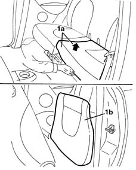
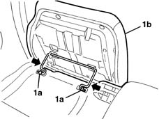

7050A22 rear seat cushion - r+r
- Path
- Procedures > 70 FITTINGS > 7050 REAR SEATS > 7050A rear seat assembly > 7050A22 rear seat cushion - r+r
- Kind
- repair procedure (removal / refitting; the operation number is the code)
- Applies to
- all engines; all production periods
- Interactive page
- https://sloeber94.github.io/elrnDB-lYpsln/en/#/2429645
Applies to: all engines; all production periods
 Removing
Removing
 Refitting
RefittingPlace the front seats in the front end of travel position.
1. Lift up the cushioin (1a), by hand, as shown in the diagram, until it is in a vertical position (1b).

Applies to: all engines; all production periods
1. Release the retainers (1a) from the seats, then remove the cushion (1b).

Applies to: all engines; all production periods
Refitting
RemovingCheck that the cushion is undamaged.
Position the cushion and attach the retainers.
Lower the cushion into the correct position.